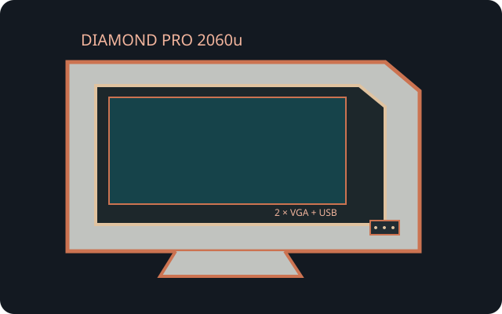

[ INDIVIDUAL COMPONENT // MITSUBISHI ]
Mitsubishi Diamond Pro 2060u
A Diamondtron NF professional multiscan monitor with a large 4:3 screen, dual analog inputs and an integrated USB hub.

IDENTIFICATION: Diamond Pro 2060u is the exact family designation; confirm regional labeling and the monitor's installed port configuration before buying cables or applying power.
Specifications
| Image size / tube | 22-inch nominal Diamondtron NF CRT with approximately 20-inch (508 mm) viewable diagonal. |
|---|---|
| Grille pitch | 0.24 mm aperture-grille pitch. |
| Resolution and refresh | No fixed native raster. Recommended mode is 1600 × 1200 at 85 Hz; maximum is 2048 × 1536 at 60 Hz. Horizontal scan 30–121 kHz and vertical 50–160 Hz; use the mode chart for valid combinations. |
| Connectors | Two Mini D-Sub 15-pin (HD15/DE-15) analog RGB inputs; integrated USB 1-upstream/3-downstream hub. USB is data-only, not a display input. |
| Power | Regional supply variants are rated 100–120 V or 220–240 V AC, 50/60 Hz; around 140 W active and under 3 W in off/standby conditions. Follow the unit's rear label. |
| Host compatibility | Connect an analog VGA RGB output and select the matching input. A modern digital source requires an active digital-to-analog converter; the onboard hub needs its own USB host lead. |
Compatibility and safety
Do not connect a unit to mains outside the nameplate range; this product has region-specific AC supply versions. Check the selected mode against scan limits. The CRT is heavy and stores hazardous voltage; do not open it or attempt internal service without qualified CRT training.
Manuals and references
- Mitsubishi Diamond Pro 2060u User ManualProduct-specific operation, timing, connection and safety details.
- Diamond Pro 2060u specification sheetArchived technical data sheet for this model.